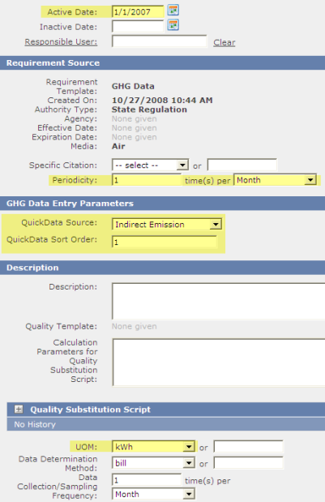
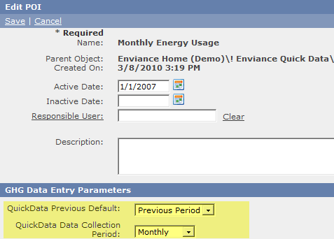

The Data tab in Quick Data allows users to enter periodic data in an easy-to-use form. Once the data has been validated, it can be locked so that further editing is disabled, preventing inadvertent changes. (If necessary, data can still be edited by logging into the Management System.)
The following section explains how to set up the Management System for data entry using the Data tab. The setup involves the use of specific custom fields on the system objects you want to expose in the Data tab.
To view and enter data on the Data tab in Quick Data, the following elements are required:
Summary of objects and custom fields to apply:
|
Object type |
Custom Fields, Notes |
|---|---|
|
POI |
Optional: QuickData Data Collection Period: Text, dropdown list, with three values: Monthly, Quarterly, Annually |
|
Parameter
Calculated Requirements (for display only) |
QuickData Source (text, dropdown list, any values) |
|
QuickData Sort Order (number, text box) |
|
|
Active Date (filters display of requirements for data entry; if null, displays for all available dates) |
|
|
Periodicity (values: Monthly, Yearly or Quarterly) Controls when data entry is allowed. |
|
|
Non-numeric requirement |
One NNR is required in the same location as the data entry parameters in order to display Data Lock and Comments box. Properties are not important. |
Create the following custom fields. The naming convention is important. The Name (id value) must be exactly as specified:
QuickData Source: Text/Dropdown list. List values may be anything that reflects your monitoring categories.
QuickData Sort Order: Number/Text box
QuickData Previous Default: Text/Dropdown list. Two list values: Previous Period and Previous Year.
QuickData Data Collection Period: Text/Dropdown list. Three list values: Monthly, Quarterly, Annually
Create two Custom Field Templates and add these fields.
Template 1 for Numeric Requirements: Add the following fields to be applied to the requirements: QuickData Source and QuickData Sort Order.
Template 2 for POI (optional fields): Add the following field to be applied to the POI: QuickData Previous Default and QuickData Data Collection Period.
You may use the same template for both the requirements and POI, but the fields will only be relevant according to the object type to which they are applied. If the objects already have a Custom Field Template, you can add the QuickData fields to that template. The template names are not important.
The following requirements can be set up for access through the Data tab in Quick Data:
To set up the requirements to be accessed through the Data tab in Quick Data:
Set the following properties on each requirement:
Active Date: Earliest date for which you want to allow data entry. The requirement will not be shown for data entry before this date. If no date is entered, data entry will be allowed for any date available in the date dropdown (currently monthly from Jan 2002). (Inactive date can also be used to disable data entry after a set date.)
In addition, the Active and Inactive Dates on the parent object can be set to control data entry access to all child requirements. The active date on the parent is checked first, then the active dates on the child requirements. The active date on the parent object will override any active dates set on the children when deciding whether to display the requirements or not.
Periodicity: This setting is optional. You may use either the QuickData Data Collection Period on the POI to set the periodicity for all requirements or the periodicity field on the requirements. If no value is set for that POI custom field, or the field is not present, set periodicity for each requirement individually.
For monthly data, enter 1 Month. For yearly data, enter 1 Year. For quarterly data, enter 1 Quarter.
If the periodicity is 1 yr, the monthly selection will be disabled and by default the last month of the year will be selected (by default, December, but fiscal year end may be configured differently from the Data tab in Quick Data). For period of 1 yr, the data point is stored at 1200AM on the last day of the last month of the year.
For monthly or quarterly periods (or if periodicity is not defined), one data entry field is available for each month; the data point will be stored at 1200 AM on the last day of the appropriate month.
Periodicity setting for all requirements will be ignored if the field QuickData Data Collection Period is present on the POI in the system and has a value.
Unit of Measure: A value (any value) must be selected for the requirement to appear on the Enter Data tab.
QuickData Source: A value in this field (any value) will expose the requirement to the Quick Data page. If there is no value, the requirement will not be displayed in Quick Data.
Quick Data Sort Order: Numeric value, which determines the order of appearance in the list shown on the Data tab. If none is entered, or there are conflicts, sorting will be alphabetical.

To add Comments box and Data Lock checkbox, create a Non-Numeric Requirement under the same POI as the requirements.
You can name it QuickData for identification; however the name is unimportant and no properties are required. (A Custom Field Template is also not necessary.) The mere existence of the NNR causes a Comments box and a Data Lock checkbox to appear in the page, below the data entry fields for the requirements.
The Comment and Data Lock features are optional. However, the data lock feature adds extra security, as it ensures that once data has been validated and locked, it cannot be edited further from the Data tab in EMS Quick Data by anyone. (Data can still be edited from the Management System if necessary. This is not to be confused with the data lock feature in the main application.)
For this feature to work properly, there should be only one NNR under the parent object, which is used exclusively for Quick Data. If there is more than one NNR, multiple Comment boxes and data lock checkboxes will be displayed, with the risk of overwriting or corrupting data already stored by existing NNRs.
Apply the Custom Field Template that contains the fields QuickData Previous Default and QuickData Data Collection Period to the parent POI of the requirements.
QuickData Previous Default: Default value to show in the Previous data column. Choice may be toggled from the user data entry screen.
QuickData Data Collection Period: Sets the data collection period (annually, monthly, or quarterly) for all requirements under the POI. If a value is present, any Periodicity values on the individual requirements will be ignored.

If the yearly or quarterly data collection period does not conform to the standard calendar periods, you will need to change the designated end month from the Quick Data page.
To change the end month for annual or quarterly data:
Set the Annual or Quarterly period, depending on your data entry configuration.
For annual data entry, select the Annual End month. This setting only applies if the collection period is annually.
For quarterly data entry, select the First Quarter End month. This setting only applies if the collection period is quarterly.
The Annual End and First Quarter End months set via the Configuration link are system settings and will apply to all QuickData pages for the system. It only needs to be set once on a QuickData page to apply to all other pages. (This has no value in the main application, however, which allows for data entry at any date/time.)
To view or enter data on the Data tab in Quick Data, users must have the following minimum permissions:
View Data: Allows users to see but not edit data values.
View, Enter and Edit Data on the requirements, including the non-numeric requirement used for data lock and comments. (Permissions may be inherited from the parent object.)
Users must be Home users of the system they need to enter data for. There is no method for changing system models from Quick Data.
The Active/Inactive Dates on the facility and requirements also control what users see.
The lock checkbox on the data entry page may be used to lock data once it has been validated. The lock checkbox is an optional feature which can be set up using a non-numeric requirement, as explained in the setup instructions.
To lock data:
Once the data set has been locked, the data may not be edited from the Quick Data interface. If necessary, the data may be edited from the main application. You may also reset the lock from the main application so that users may edit the data from Quick Data.
To reset the lock:
The lock box on the Quick Data page will now be unlocked and users may edit the data from Quick Data.
The Quick Data lock box is unrelated to the data lock feature in the main application and applies only to the Quick Data interface.